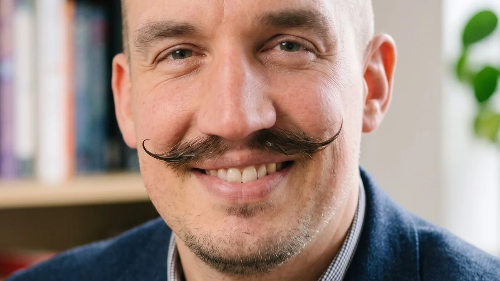

Current role
TalkTalk
Head of Insights, Analytics and Market Research, connecting customer and market evidence to commercial decisions.
Founder / MOSAIC CIC
Insights leader.
Practitioner-researcher.
Founder of MOSAIC.

Why MOSAIC
Phil founded MOSAIC to understand and address structural barriers to opportunity in North West England. His experience of moving from military to civilian life informs his interest in how systems recognise people’s skills and experience. Read the original MOSAIC story.
MOSAIC gives that purpose a practical focus: research with people furthest from opportunity, understand the rules and decisions affecting them, and develop responses with communities.
Professional background
Phil’s work combines customer insight, analytics and market research. He is interested in how organisations use evidence, who is responsible for acting on it and what prevents findings from influencing decisions.
Current role
Head of Insights, Analytics and Market Research, connecting customer and market evidence to commercial decisions.
Doctoral research
DBA researcher with interests in evidence-based management, organisational identity and AI-enabled organisational change.
Research leadership
Previous senior insight roles in an agency environment, supporting clients’ understanding of customers and markets.
Earlier career
Experience in intelligence, evidence assessment and decision support before a career in commercial insight.
These are Phil’s professional and academic affiliations. Their inclusion does not imply funding, partnership or endorsement of MOSAIC by these organisations. View Phil’s professional profile.
Research, speaking and collaboration
Phil welcomes conversations about community research, evidence-based decisions, organisational change and the use of AI in research and analytics.
For a speaking invitation or proposed collaboration, share the subject, audience, timing and what you want the work to achieve.
Get in touch